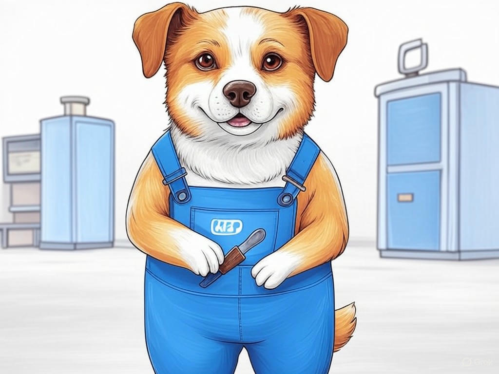

How to Choose the Right MSP for Your New Albany, IN Business
Table of Contents
- Introduction: Understanding Your Specific Challenges
- How Can an MSP Address Your Local Business Needs in New Albany?
- What Are the Cost-Effective IT Solutions for Your Budget?
- What Services Should You Expect from Your MSP?
- How to Maintain Control Over Your IT Infrastructure with an MSP?
- Scaling Your IT Solutions as Your New Albany Business Grows
- Overcoming Common Objections to Using an MSP
- Success Stories: How New Albany Businesses Thrived with the Right MSP
- Conclusion: Your Implementation Plan and Next Steps
Introduction: Understanding Your Specific Challenges
We know that choosing the right managed service provider (MSP) for your New Albany, IN business can feel overwhelming. You're not alone in this journey; many local businesses face similar challenges when it comes to IT support. How to choose the right MSP for your New Albany, IN business is crucial because it directly impacts your operational efficiency and growth potential. In New Albany, where the business landscape is as diverse as the Ohio River that borders it, finding an MSP that understands your unique needs is essential. According to a recent survey, businesses that partner with the right MSP see an average 27% increase in productivity. In this article, we'll guide you through seven proven strategies to help you make an informed decision. We'll cover everything from understanding your local business needs to scaling your IT solutions as your business grows. By the end, you'll have a clear roadmap to selecting the best MSP for your New Albany, IN business. If you're struggling with identifying your IT needs, start by listing your current pain points and desired outcomes specifically. This will help you communicate effectively with potential MSPs.
So, are you ready to transform your IT challenges into opportunities for growth? Let's dive in and explore how you can choose the right MSP for your New Albany, IN business.How Can an MSP Address Your Local Business Needs in New Albany?

You already understand the importance of IT support for your business, and we're here to help you see how an MSP can meet your specific needs in New Albany. An MSP can provide tailored solutions that align with the local business environment, from the bustling Main Street to the growing tech hubs near the Indiana University Southeast. They can offer services like network management, cybersecurity, and cloud solutions, all customized to your business's size and industry. For instance, if you're in the manufacturing sector, which is prominent in New Albany, an MSP can help optimize your production processes through IT automation.
Here's how an MSP can address your needs:- Local Expertise: MSPs familiar with New Albany can provide insights into local regulations and business practices.
- Scalability: As your business grows, an MSP can scale your IT infrastructure seamlessly.
- Cost Efficiency: By outsourcing IT, you can reduce costs associated with in-house IT staff and equipment.
So, what does this mean for you? By partnering with an MSP, you can focus on growing your business while leaving the IT complexities to experts who understand the New Albany landscape.
What Are the Cost-Effective IT Solutions for Your Budget?
We understand that managing your IT budget is a top priority for your New Albany, IN business. How to choose the right MSP for your New Albany, IN business involves finding cost-effective solutions that don't compromise on quality. In our experience, many businesses in New Albany, like those near the bustling downtown area, are looking for ways to optimize their IT spending. Here are some strategies to consider:
- Managed Services: Opt for a flat-rate fee model that covers all your IT needs, which can be more predictable and often more cost-effective than hiring in-house staff.
- Cloud Solutions: Leverage cloud services to reduce the need for expensive hardware and maintenance. This is particularly beneficial for businesses in the growing tech sector around New Albany.
- Outsourcing: Consider outsourcing specific IT tasks to save on labor costs and gain access to specialized expertise.
- Cost vs. Benefit: Evaluate the cost of each solution against the benefits it provides.
- Scalability: Consider how well the solution can grow with your business.
- Support and Maintenance: Assess the level of ongoing support and maintenance required.
What Services Should You Expect from Your MSP?
You're smart to consider what services you should expect from an MSP when choosing the right one for your New Albany, IN business. A good MSP should offer a comprehensive suite of services tailored to your needs. In New Albany, where businesses range from small startups to established enterprises, the right MSP can make all the difference. Here's what you should look for:
- Proactive Monitoring and Maintenance: Regular checks to prevent issues before they arise, which is crucial for businesses near the busy I-64 corridor.
- Help Desk Support: Immediate assistance for any IT problems, ensuring minimal downtime for your operations.
- Cybersecurity: Robust protection against cyber threats, which is vital for businesses in the tech-heavy areas of New Albany.
- Data Backup and Recovery: Ensuring your data is safe and can be recovered in case of a disaster.
- Cloud Services: Access to scalable cloud solutions that can grow with your business.
- Relevance: Does the service address a specific need in your business?
- Expertise: Does the MSP have proven experience in providing this service?
- Value: Does the service offer a good return on investment?
How to Maintain Control Over Your IT Infrastructure with an MSP?
You're wise to want to maintain control over your IT infrastructure even when working with an MSP. In New Albany, where businesses value autonomy, it's important to ensure that your MSP partnership enhances your control rather than diminishes it. Here's how you can achieve this:
- Clear Communication: Establish regular meetings and updates with your MSP to stay informed about your IT environment.
- Defined Roles and Responsibilities: Clearly outline what tasks the MSP will handle and what you'll manage internally.
- Access to Tools and Reports: Ensure you have access to monitoring tools and performance reports to keep a pulse on your IT operations.
- Service Level Agreements (SLAs): Use SLAs to set expectations and ensure accountability.
So, what's the benefit for you? By maintaining control over your IT infrastructure, you can ensure that your New Albany business remains agile and responsive to your needs.
Scaling Your IT Solutions as Your New Albany Business Grows
As your understanding of how to choose the right MSP for your New Albany, IN business grows, so does the need to scale your IT solutions. In New Albany, where businesses are constantly evolving, it's crucial to have an IT infrastructure that can grow with you. Here's how you can ensure your IT solutions scale effectively:
- Flexible Contracts: Look for MSPs that offer flexible contract terms to accommodate your growth.
- Cloud-Based Solutions: Utilize cloud services that can easily scale up or down based on your needs.
- Proactive Planning: Work with your MSP to develop a long-term IT strategy that aligns with your business goals.
So, what does this mean for you? By scaling your IT solutions strategically, you can ensure that your New Albany business remains competitive and ready for future growth. How are you planning to scale your IT infrastructure as your business expands?
Overcoming Common Objections to Using an MSP
You've come a long way in understanding how to choose the right MSP for your New Albany, IN business, and now it's time to address some common objections you might have. In New Albany, where businesses value independence and control, it's natural to have concerns about outsourcing IT. Here's how to overcome these objections:
- Loss of Control: As we discussed earlier, maintaining control is possible with clear communication and defined roles. If you're worried about this, ensure your MSP provides regular updates and access to tools.
- Cost Concerns: While there's an upfront cost, MSPs can actually save you money in the long run through efficient management and reduced downtime. If you're struggling with cost justification, calculate the potential savings from reduced IT incidents specifically.
- Security Risks: A reputable MSP will have robust security measures in place. If you're concerned about security, ask for detailed information on their cybersecurity protocols.
- Dependence on the MSP: While it's true you'll rely on the MSP, a good partnership should empower your business, not hinder it. If you're worried about dependence, look for an MSP that offers training and knowledge transfer.
Success Stories: How New Albany Businesses Thrived with the Right MSP
You're already well-versed in how to choose the right MSP for your New Albany, IN business, and now let's look at some success stories that illustrate the impact of making the right choice. In New Albany, businesses across various sectors have thrived by partnering with the right MSP. Here are a few examples:
- Retail Business: A local retail store near the New Albany Farmers Market struggled with frequent system crashes. After partnering with an MSP, they implemented a proactive monitoring system that reduced downtime by 90%, allowing them to focus on customer service and sales.
- Manufacturing Firm: A manufacturing company in the industrial park near the Ohio River faced challenges with outdated IT infrastructure. Their MSP helped them transition to cloud solutions, resulting in a 30% increase in production efficiency.
- Healthcare Provider: A healthcare clinic in downtown New Albany needed to ensure HIPAA compliance. Their MSP provided specialized cybersecurity services, reducing the risk of data breaches by 50% and ensuring patient data security.
Conclusion: Your Implementation Plan and Next Steps
You've now gained valuable insights into how to choose the right MSP for your New Albany, IN business. From understanding your specific challenges to scaling your IT solutions, you're well-equipped to make an informed decision. The key takeaways are clear: an MSP can address your local business needs, provide cost-effective solutions, offer comprehensive services, help you maintain control, scale as you grow, overcome common objections, and lead to success stories like those in New Albany.
Your next steps are crucial. Start by reviewing your IT needs and budget, then reach out to potential MSPs to discuss your requirements. But why stop there? For personalized assistance, consultation, or implementation, consider partnering with Perfect Your Customer, LLC. Our team specializes in helping businesses like yours navigate the complexities of IT management. We offer tailored solutions that align with your New Albany business's unique needs, from cybersecurity to cloud services. By working with us, you'll benefit from our deep industry experience and local expertise, ensuring your IT infrastructure supports your growth and success.Contact Perfect Your Customer, LLC today for a consultation that's tailored to your specific needs and challenges with how to choose the right MSP for your New Albany, IN business. We're here to help you every step of the way, ensuring you make the best choice for your business. With our support, you can focus on what you do best while we handle your IT needs. What are you waiting for? Let's transform your IT challenges into opportunities for growth right here in New Albany.